Баг-кейсы RatioT SCADA 6.41.09
Дата тестирования: 13.08.2026
Версия: RatioT Server 6.41.09-2456
Контур: локальная установка C:\Program Files\RatioTScada
Учётные данные для тестов: admin / admin, тестовый пользователь testuser02 / TestPassword123!
Оглавление
- Кейс 1. Ошибки создания ресурсов при первом запуске сервера
- Кейс 2. Режимы лицензирования free / trial не описаны в документации
- Кейс 3. Инсталлятор запрашивает перезапись собственных файлов
- Кейс 4. Импорт Modbus-регистров из CSV/XML теряет имена, описания и адреса
- Кейс 5. eventLog сбрасывает настройки колонок при поступлении событий
- Кейс 6. В дереве тегов невозможно выбрать абсолютную модель в качестве источника
- Кейс 7. NoSQL-хранилище событий ломает сервер
- Кейс 8. HTML-сниппет сдвигает layout дашборда
- Кейс 9. Установка в нестандартную папку + замена лицензии приводит к отказу лицензирования
- Кейс 10. Локальный магазин приложений отсутствует в веб-клиенте
- Кейс 11. Вёрстка страницы 404
- Кейс 12. В дистрибутиве остался логотип и брендинг AggreGate
- Кейс 13. Раздел «Драйвера и расширения» открывает корень системного дерева вместо плагинов
- Кейс 14. Несуществующие страницы
/web/*возвращают JSON вместо HTML 404 - Кейс 15. Ссылки на справку из веб-клиента ведут на маркетинговый сайт вместо документации
- Кейс 16. Вкладки «Информации о сервере» обрезаются и не переносятся
- Кейс 17. Раздел «Пользователи» открывает корень системного дерева вместо списка пользователей
- Кейс 18. Ссылки в демо-приложении ведут на сайт AggreGate вместо RatioT/BUFFLAB
- Кейс 19. Дашборд «Тревоги» не открывается в веб-клиенте
- Кейс 20. Пустые шаблоны задвижек, насосов и других устройств
- Кейс 21. Бесконечная загрузка и JS-ошибка при редактировании демо-проектов
- Кейс 22. Скриншоты и изображения AggreGate в справке и демо-проектах
- Кейс 23. Не отображаются изображения в демо-проекте Романа Шиндина
- Кейс 24. Не работает активация метаданных устройства
- Кейс 25. Встроенная справка недоступна по URL
/static/docs/ - Кейс 26. JS-ошибки
getListenerCodeпри навигации по системному дереву - Кейс 27. Прямые ссылки на настройки сервера и лицензии возвращают JSON 404
- Кейс 28. Не работает перенос контекстов посредством приложений
- Кейс 29. Не работают дополнительные свойства при использовании относительных инструментальных панелей
- Кейс 30. Не работает eventLog при использовании относительных инструментальных панелей
- Итог
Кейс 1. Ошибки создания ресурсов при первом запуске сервера
Критичность: Low
Тип: Ошибка инициализации
Категория: 2. Ошибки OEM
Описание
При первом запуске RatioT_server_console.exe сервер стартует, но в журнале фиксируются 3 ERROR. Часть встроенных моделей и отчётов не инициализируется.
Воспроизведение
- Установить RatioT SCADA 6.41.09 на чистую Windows.
- Запустить
C:\Program Files\RatioTScada\RatioT_server_console.exe. - Дождаться строки
Starting web server. - Открыть
C:\Program Files\RatioTScada\logs\server.log. - Найти строки с
ERROR ag.context.
Ожидаемый результат
Первый запуск завершается без ERROR/FATAL.
Фактический результат
13.08.2026 12:47:25,471 ERROR ag.context
Error creating resource 'users.admin.models.avatarManagement':
Cannot invoke "...Context.callFunction(...)" because "container" is null
13.08.2026 12:47:25,733 ERROR ag.context
Error creating resource 'users.admin.reports.maintenance':
Контекст недоступен: users.admin.reports
13.08.2026 12:47:26,509 ERROR ag.context
Error creating resource 'users.admin.models.workflowModel':
Cannot invoke "...Context.callFunction(...)" because "container" is null
Скриншоты
 — фрагмент
— фрагмент server.logс ошибками инициализации ресурсов- Лог-файл: см.
C:\Program Files\RatioTScada\logs\server.log - Автотест фиксирует проблему:
tests/test_ui_ux.py→test_log_errors()
Проверка в 6.41.11 (ASD-6474, ответ АГ: «состав лицензий пересмотрен и перегенерирован, новые сборки не содержат ERROR ag.context»)
Проверено на свежей установке RatioT SCADA 6.41.11 (сборка 2532), лог server.log начинается с первого запуска сервера (строка «First launch detected», «Starting RatioT Server v6.41.11-2532»):
- Все три исходные ошибки из кейса —
users.admin.models.avatarManagement,users.admin.reports.maintenance,users.admin.models.workflowModel— отсутствуют в логе. Исходный дефект устранён. - Однако утверждение «логи сервера более не содержат строки с ERROR ag.context» на сборке 2532 не подтверждается полностью: при «Создание ресурсов (Mode: 0, server machine)» остаётся одна ERROR того же класса:
09.09.2026 16:47:26,827 ERROR ag.context Error creating resource 'users.admin.models.deviceImages': Переменная 'deviceImages' недоступна в контексте 'users.admin.models.deviceImages' - Дополнительно при инициализации фиксируются WARN со стектрейсами
ag.statistics: «Переменная 'status' недоступна в контексте 'users.admin.models.tabList'» и «Переменная 'eventStatistics' недоступна в контексте 'users.admin.models.tabList'».
Итог: частично исправлено. Три исходных ресурса создаются корректно, но при первом запуске остаётся одна ERROR ag.context (users.admin.models.deviceImages) и два WARN ag.statistics (users.admin.models.tabList). Возможно, перегенерация лицензий вошла в сборку новее 2532 — просим подтвердить номер сборки и проверим повторно.
Скриншоты (6.41.11)
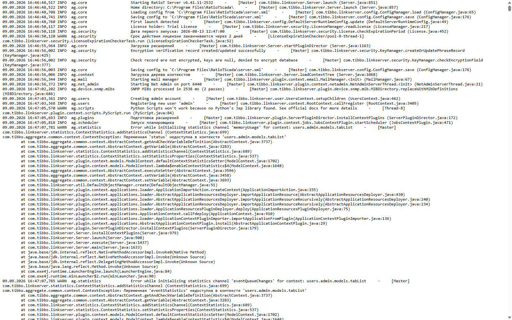
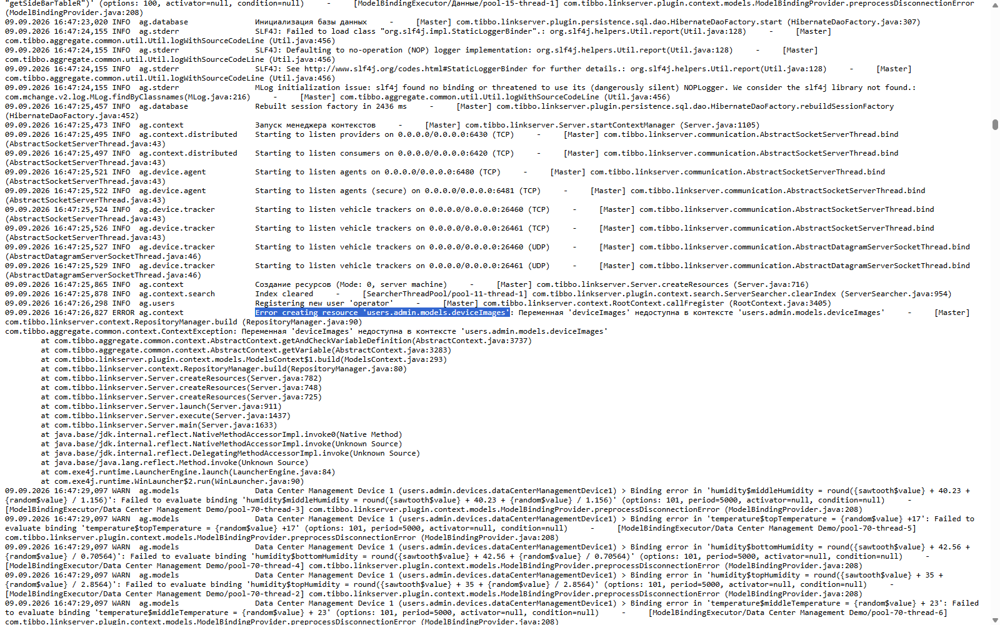
Кейс 2. Режимы лицензирования free / trial не описаны в документации
Критичность: Medium
Тип: Документация / лицензирование
Категория: 1. Ошибки кастомизации
Описание
Инсталлятор RatioT SCADA 6.41.09 предлагает выбор между двумя режимами на этапе установки: - Пробная лицензия (30 дней) - Бесплатная лицензия на 100 тэгов
Важно: режим с ограничением в 100 тегов устанавливается исключительно через инсталлятор при первой установке. В самом веб-интерфейсе RatioT SCADA и в документации нет управления или описания этого режима.
Однако в официальной документации (licensing.htm, ls_license_server.htm, ls_config_license_server.htm, ls_requirements.htm) описаны только именные лицензии, привязанные к инсталляции, и централизованный сервер лицензий. Пробный и бесплатный режимы не упоминаются.
Воспроизведение
- Запустить установку
RatioT SCADA 6.41.09. - На шаге «Выберите тип лицензии» увидеть два варианта: «Пробная лицензия (30 дней)» и «Бесплатная лицензия на 100 тэгов».
- Открыть
https://localhost:8443/static/docs/licensing.htm. - Убедиться, что раздел описывает только именные лицензии и активационный ключ.
- Проверить
ls_license_server.htmиls_config_license_server.htm— там также нет описания free/trial.
Ожидаемый результат
Документация должна содержать раздел о бесплатном и пробном режимах: какие ограничения, как переключаться, что происходит по истечении срока/при превышении лимита тегов, можно ли использовать в продакшене.
Фактический результат
Пользователь видит в инсталляторе режимы, о которых в документации ни слова. Непонятно: - чем отличаются free и trial; - что будет после 30 дней или после 100 тегов; - можно ли перейти с free/trial на полную лицензию без переустановки.
Скриншоты
 — диалог выбора лицензии в инсталляторе
— диалог выбора лицензии в инсталляторе
Ссылки на документацию
admin/custom/templates/docs/licensing.htmadmin/custom/templates/docs/ls_license_server.htmadmin/custom/templates/docs/ls_config_license_server.htm
Кейс 3. Инсталлятор запрашивает перезапись собственных файлов
Критичность: Low
Тип: Установка / UX
Категория: 2. Ошибки OEM
Описание
При установке RatioT SCADA 6.41.09 инсталлятор выдаёт диалог «Файл уже существует. Вы хотите, чтобы программа установки заменила его?» для файлов внутри C:\Program Files\RatioTScada\admin\custom\templates\docs_ru\wizard_1.png и wizard_2.png. Это создаёт впечатление, что установка повторяется поверх существующей, или что инсталлятор не может корректно управлять своими же файлами.
Воспроизведение
- Запустить установку RatioT SCADA 6.41.09.
- Пройти шаги до копирования файлов.
- Дождаться диалога с предложением заменить
docs_ru\wizard_1.png. - Нажать «Да для всех».
- Через некоторое время появится аналогичный диалог для
docs_ru\wizard_2.png.
Ожидаемый результат
На чистой установке инсталлятор не должен спрашивать о перезаписи собственных файлов. Если это обновление — должен быть единый диалог «Заменить все» или тихая перезапись без лишних подтверждений.
Фактический результат
Пользователь вынужден несколько раз вручную подтверждать перезапись файлов, которые только что были скопированы установщиком. Это выглядит как ошибка упаковки инсталлятора: одни и те же файлы попадают в разные компоненты/директории и конфликтуют при распаковке.
Подтверждено в 6.41.11 (01.09.2026): при установке RatioT SCADA 6.41.11 проблема сохраняется — инсталлятор снова выводит диалог «Файл уже существует... docs_ru\wizard_1.png. Вы хотите, чтобы программа установки заменила его?».
Скриншоты
 — диалог перезаписи
— диалог перезаписи wizard_1.png — диалог перезаписи
— диалог перезаписи wizard_2.png
Примечание
Скриншоты предоставлены в файле incoming/скрины.docx.
Кейс 4. Импорт Modbus-регистров из CSV/XML теряет имена, описания и адреса; экспорт в CSV портит русскую кодировку
Критичность: High
Тип: Импорт / экспорт данных
Категория: 3. Ошибки платформы партнёра
Описание
При создании пустого Modbus-устройства и импорте регистров из ранее экспортированных файлов CSV/XML теряются имя, описание, адрес, размер и другие поля. Импорт того же файла в формате .tbl работает корректно. Кроме того, окно экспорта не содержит кнопки закрытия — чтобы выйти, пользователь вынужден что-то экспортировать. При экспорте регистров с русскими именами/описаниями в CSV в полученном файле русский текст отображается кракозябрами.
Воспроизведение
- Открыть
https://localhost:8443и войти подadmin / admin. - Перейти в дереве: Устройства → modbus → Конфигурация → Регистры устройства.
- Создать несколько регистров с именами и описаниями на русском языке.
- Нажать кнопку экспорта и сохранить файл в форматах
.csv,.xml,.tbl. - Удалить все регистры или создать новое пустое Modbus-устройство.
- Импортировать сохранённые
.csvи.xml. - Сравнить заполненность полей с исходными данными и с импортом
.tbl. - Открыть экспортированный
.csvв Excel/Notepad++ и проверить кодировку русских строк.
Ожидаемый результат
- CSV и XML импортируют все поля аналогично
.tbl. - Диалог экспорта можно закрыть без выполнения экспорта.
- CSV-файл содержит корректную UTF-8 / Windows-1251 кодировку для русских символов.
Фактический результат
- После импорта CSV/XML поля Имя, Описание, Десятичный адрес, Размер остаются пустыми.
- Диалог экспорта нельзя закрыть без экспорта.
- CSV-файл содержит нечитаемые символы вместо русского текста.
Уточнение по лицензированию
При проверке на текущей trial-лицензии (Trial License, 0/100 устройств) в диалоге добавления устройства драйвер Modbus отсутствует. В списке доступны IEC-104, Агент, BACnet, DNP3 и др., но Modbus нет. Это не позволяет лично воспроизвести импорт/экспорт регистров в данном контуре. Скриншоты самого бага (пустые поля, кодировка) предоставлены коллегами с полноценной лицензией.
Скриншоты
 — пустое устройство modbus перед импортом
— пустое устройство modbus перед импортом — после импорта CSV: пустые имена/описания и адреса
— после импорта CSV: пустые имена/описания и адреса — после импорта TBL: данные на месте
— после импорта TBL: данные на месте — диалог экспорта без кнопки закрыть
— диалог экспорта без кнопки закрыть — CSV с искажённой кодировкой
— CSV с искажённой кодировкой — драйвер Modbus отсутствует в списке доступных драйверов (trial-лицензия)
— драйвер Modbus отсутствует в списке доступных драйверов (trial-лицензия)
Источник
Материалы коллег из incoming/Баги с импортом и экспортом Modbus регистров в форматах csv и xml.docx.
Кейс 5. Настройки колонок компонента eventLog сбрасываются при поступлении событий
Критичность: High
Тип: Web UI / дашборды / компонент eventLog
Категория: 3. Ошибки платформы партнёра
Описание
В дашборде добавлен элемент Журнал событий (eventLog). В расширенных настройках на вкладке Колонки включена опция «Ширина колонок настроена вручную», задан порядок колонок, их ширина и видимость. Настройки применяются, пока событий нет; как только поступает событие, таблица возвращается к дефолтному виду и отображаются все колонки, включая скрытые.
Воспроизведение
- Открыть дашборд (например,
АВР.Главный экран). - Добавить или отредактировать компонент Журнал событий.
- В разделе Расширенные → Колонки включить «Ширина колонок настроена вручную».
- Скрыть колонки Подтверждение и Обогащение, задать порядок и ширину остальных.
- Сохранить дашборд.
- Дождаться/сгенерировать событие (например, переключение режима работы).
- Убедиться, что таблица вернулась к стандартному набору колонок.
Ожидаемый результат
Настроенные колонки сохраняются независимо от наличия событий.
Фактический результат
При поступлении события отображаются все колонки, настройки не применены.
Уточнение по лицензированию
При проверке на trial-версии редактор дашбордов в веб-клиенте недоступен (нет кнопки/раздела для добавления/редактирования компонентов), поэтому лично воспроизвести настройку колонок eventLog в данном контуре не удалось. Скриншоты бага предоставлены коллегами с полноценной лицензией.
Скриншоты
 — редактор дашборда с выделенным eventLog
— редактор дашборда с выделенным eventLog — настройки колонок без данных
— настройки колонок без данных — список полей eventLog
— список полей eventLog — журнал с событием: видны все колонки
— журнал с событием: видны все колонки — после события настройки не восстановились
— после события настройки не восстановились
Источник
Тикет ASD-6406 из incoming/Тикеты в АГ от ДИР.docx.
Кейс 6. В дереве тегов невозможно выбрать абсолютную модель в качестве источника
Критичность: Medium
Тип: UX / дерево тегов / документация
Категория: 3. Ошибки платформы партнёра
Описание
На вебинаре по RatioT SCADA 6.4 озвучивалось, что при привязке тегов цифрового двойника в дереве тегов источником можно выбирать не только устройство, но и абсолютную модель. В текущей версии такой возможности нет, а в документации описание отсутствует.
Воспроизведение
- Открыть Дерево тегов.
- Попытаться настроить источник для тега цифрового двойника.
- В диалоге выбора источника проверить список доступных вариантов.
Уточнение по лицензированию
При проверке на trial-версии раздел Дерево тегов в системном дереве и в поиске отсутствует. Это не позволяет лично воспроизвести диалог выбора источника в данном контуре. Скриншоты с отсутствием абсолютной модели предоставлены коллегами с полноценной лицензией.
Ожидаемый результат
- Дерево тегов доступно в лицензии.
- В диалоге выбора источника доступен выбор абсолютной модели.
- Функция описана в документации.
Фактический результат
- В trial-версии раздел "Дерево тегов" отсутствует.
- Скриншоты коллег показывают, что выбор источника ограничен устройствами; абсолютная модель не доступна.
Скриншоты
 — диалог выбора источника, список пуст/отсутствует абсолютная модель
— диалог выбора источника, список пуст/отсутствует абсолютная модель — поиск "тег" не находит раздел "Дерево тегов" в trial-версии
— поиск "тег" не находит раздел "Дерево тегов" в trial-версии
Источник
Тикет ASD-6418 из incoming/Тикеты в АГ от ДИР.docx.
Проверка в 6.41.11 (ASD-6485, ответ АГ: «не является ошибкой, источником может быть только аккаунт устройства»)
Поведение подтверждено документацией поставки. В локальной документации RatioT SCADA 6.41.11 (sh_scada_tags.htm, раздел «Теги») прямо сказано:
- «Значение тега… может быть получено от одной или нескольких учетных записей устройств».
- «Источник — Аккаунт устройства, который предоставляет значение тега устройства» (таблица «Источники» дерева тегов).
Абсолютная модель как источник в документации не описана и в диалоге недоступна. Дашборд «Дерево тегов» (users.admin.dashboards.tags) в 6.41.11 открывается, но лично воспроизвести диалог выбора источника в нашем контуре нельзя — нет ни одного устройства/цифрового двойника с тегами (таблица пустая).
Итог: расхождение не с документацией, а с формулировкой вебинара. Поведение соответствует задокументированной архитектуре — принимаем ответ АГ, дефектом не считаем.
Скриншоты
- — диалог выбора источника, список пуст/отсутствует абсолютная модель
- — поиск "тег" не находит раздел "Дерево тегов" в trial-версии
Кейс 7. Переключение хранилища событий на NoSQL-хранилище приводит сервер в неработоспособное состояние
Критичность: Critical
Тип: Хранилище / конфигурация сервера
Категория: 3. Ошибки платформы партнёра
Описание
В настройках сервера, раздел Хранилище → База данных, пункт Хранилище событий по умолчанию отключён. Если выбрать NoSQL-хранилище, сервер уходит в перезапуск и больше не восстанавливается. Утилита configurator для версии 6.41 отсутствует, что не позволяет восстановить конфигурацию.
Воспроизведение
⚠️ Выполнять только на тестовом контуре с возможностью переустановки. 1. Открыть Настройки → Хранилище → База данных. 2. Для пункта Хранилище событий выбрать NoSQL-хранилище. 3. Сохранить конфигурацию. 4. Наблюдать перезапуск сервера.
Ожидаемый результат
Сервер перезапускается и продолжает работать с выбранным хранилищем; либо операция блокируется с понятным сообщением о неподдерживаемой конфигурации.
Фактический результат
Сервер не восстанавливается; конфигурация может быть потеряна; отсутствует утилита для ручного восстановления.
Уточнение
При проверке на trial-версии вкладка Хранилище → База данных доступна, и в ней видно, что Хранилище событий по умолчанию Отключено. Рядом расположен выпадающий список с вариантом NoSQL хранилище. Само переключение не производилось, чтобы не вывести сервер из строя.
Скриншоты
 — скриншот коллег: выпадающий список хранилищ
— скриншот коллег: выпадающий список хранилищ — вкладка Хранилище → База данных, "Хранилище событий" = "Отключено"
— вкладка Хранилище → База данных, "Хранилище событий" = "Отключено"
Источник
Тикет ASD-6392 из incoming/Тикеты в АГ от ДИР.docx.
Кейс 8. HTML-сниппет сдвигает layout дашборда; после обновления страницы сбрасывается
Критичность: Medium
Тип: Web UI / HTML-сниппеты / визуализация
Категория: 3. Ошибки платформы партнёра
Описание
При добавлении на дашборд компонента HTML-сниппет с произвольным HTML/CSS происходит сдвиг всего layout дашборда вниз. После обновления страницы (F5) дашборд возвращается к стандартному виду, но при повторном открытии редактора сдвиг появляется снова.
Воспроизведение
- Открыть редактор дашборда.
- Добавить компонент HTML-сниппет.
- Вставить код, содержащий
<!DOCTYPE html>,<html>,<body>и стили. - Сохранить дашборд.
- Перейти к визуализации — убедиться, что элементы дашборда съехали ниже.
- Обновить страницу — layout вернулся к норме.
- Снова открыть редактор — сдвиг воспроизводится.
Ожидаемый результат
HTML-сниппет отображается внутри выделенной области без влияния на остальную вёрстку дашборда. Состояние сохраняется после обновления страницы.
Фактический результат
Визуализация дашборда сдвигается вниз; после F5 временно восстанавливается.
Уточнение по лицензированию
При проверке на trial-версии редактор дашбордов в веб-клиенте недоступен: нет кнопки "Редактировать" для существующих дашбордов и нет возможности добавить HTML-сниппет. Попытки открыть URL /.../edit приводят к странице 404 (см. кейс 16). Поэтому лично воспроизвести сдвиг layout в данном контуре не удалось. Скриншоты бага предоставлены коллегами с полноценной лицензией.
Скриншоты
 — редактор с добавленным HTML-сниппетом
— редактор с добавленным HTML-сниппетом — фрагмент вставленного HTML/CSS
— фрагмент вставленного HTML/CSS — дашборд съехал вниз
— дашборд съехал вниз — визуализация после обновления страницы
— визуализация после обновления страницы — второй пример: HTML-игра в редакторе
— второй пример: HTML-игра в редакторе — та же игра в режиме просмотра
— та же игра в режиме просмотра
Источник
incoming/отчет о проблеме с html.docx.
Итог
АГ протестировали на 6.41.10-2512 — проблема не воспроизвелась (видео во вложении тикета), предположили влияние содержимого сниппета и запросили .prs файл дашборда. У нас .prs нет: кейс зафиксирован по скриншотам коллег, а полный код сниппета на скриншоте html_snippet_code.png обрезан (виден только фрагмент CSS). Возможности запросить у коллег повторный тест нет. Кейс закрыт: не воспроизводится у АГ (6.41.10-2512), самостоятельная перепроверка невозможна, серьёзность незначительная. При повторном проявлении — воспроизводить с сохранением .prs дашборда и полного кода сниппета.
Кейс 9. Установка в нестандартную папку + замена лицензии приводит к отказу лицензирования и новому activation key
Критичность: High
Тип: Установка / лицензирование
Категория: 2. Ошибки OEM
Описание
При установке RatioT SCADA в папку, отличную от предыдущей, инсталлятор всё равно запрашивает согласие на копирование/перезапись файлов. После замены файла лицензии в новой папке программа продолжает сообщать об отсутствии лицензии. Служба сервера запускается и перезапускается, но веб-сервер не отвечает. В итоге требуется полное удаление всех версий; при новой установке генерируется новый activation key, и старая лицензия не принимается.
Воспроизведение
- Установить RatioT SCADA в папку A (например,
C:\Program Files\RatioTScada). - Получить и сохранить файл лицензии для activation key A.
- Установить ту же или новую версию RatioT SCADA в папку B (например, другой диск или подпапку).
- На шаге копирования согласиться с перезаписью/копированием файлов.
- Подменить файл лицензии в папке B файлом от папки A.
- Запустить сервер.
Ожидаемый результат
- Инсталлятор корректно определяет новую директорию и не запрашивает перезапись.
- Замена файла лицензии приводит к её активации, либо в интерфейсе есть понятная инструкция, как обновить ключ.
- Веб-сервер становится доступен после запуска службы.
Фактический результат
- Инсталлятор требует подтверждения копирования даже при разных папках.
- Лицензия не активируется; сервер не отвечает по вебу.
- После удаления и переустановки генерируется новый activation key, и старая лицензия не подходит.
Скриншоты
 — в веб-интерфейсе открыта страница Информация о сервере
— в веб-интерфейсе открыта страница Информация о сервере — вкладка Лицензионная информация показывает
— вкладка Лицензионная информация показывает Trial License, оставшееся время 29 дней, максимальное количество устройств 100
Источник
Переписка Re: Минимальные/рекомендуемые системные требования к RatioT SCADA.msg.
Кейс 10. Локальный магазин приложений отсутствует в веб-клиенте
Критичность: High
Тип: Установка / плагины / UX
Категория: 2. Ошибки OEM
Описание
В дистрибутиве RatioT SCADA присутствует локальный файл магазина приложений C:\Program Files\RatioTScada\store\store.xml. Документация (ls_store.htm) описывает магазин приложений как способ распространения модулей и решений, а также указывает, что в системном дереве должен быть доступен плагин Магазин под разделом Драйверы и расширения. Однако в веб-клиенте отсутствует какой-либо раздел или плагин «Магазин приложений». Если пользователь удалит приложение/модуль, восстановить его из локального магазина через веб-интерфейс невозможно.
Воспроизведение
- Установить RatioT SCADA 6.41.09.
- Убедиться, что файл
C:\Program Files\RatioTScada\store\store.xmlсуществует. - Открыть
https://localhost:8443и войти подadmin / admin. - В системном дереве слева раскрыть Драйверы и расширения.
- В поле поиска ввести Магазин.
Ожидаемый результат
- В системном дереве доступен плагин Магазин приложений (Store Client).
- Через него можно просматривать, устанавливать и восстанавливать модули из локального или публичного магазина.
Фактический результат
- В системном дереве нет плагина Магазин приложений.
- Поиск по слову Магазин не возвращает результатов.
- Локальный
store.xmlсуществует, но недоступен через UI. - Удалённые приложения/модули нельзя восстановить через веб-клиент.
Скриншоты
 — поиск "Магазин" в дереве не находит раздел
— поиск "Магазин" в дереве не находит раздел
Пруф из документации
В admin/custom/templates/docs/ls_store.htm сказано:
«Магазин приложений — это особый RatioT Server, на котором работает модуль "marketplace" (Store Server), и который предоставляет решения и модули для других серверов RatioT SCADA. Другие экземпляры RatioT Server могут подключиться к Магазину и загрузить предлагаемые решения и модули при помощи модуля Store Client. ... Функционал Магазина обеспечивается плагином Store Client, который скачивает решения и модули с серверов Магазина приложений...»
То есть документация декларирует наличие плагина Store Client для загрузки/восстановления модулей, но в веб-клиенте он отсутствует.
Источник
- Локальный файл:
C:\Program Files\RatioTScada\store\store.xml - Документация:
admin/custom/templates/docs/ls_store.htm
Кейс 11. Вёрстка страницы 404
Критичность: Low
Тип: Web UI / вёрстка
Категория: 1. Ошибки кастомизации
Описание
При обращении к несуществующей странице (например, через внутреннюю навигацию SPA) отображается страница 404 с огромным логотипом DKC, который перекрывает центр экрана. Текст «404 — Страница не найдена» и ссылка «На главную» накладываются на красный круг логотипа, что делает сообщение трудночитаемым.
Воспроизведение
- Войти в веб-интерфейс RatioT SCADA.
- Перейти по URL, который не существует (например, открыть несуществующий путь внутри SPA).
- Убедиться, что отображается страница 404 с логотипом DKC.
Ожидаемый результат
Страница 404 содержит чёткое, центрированное сообщение об ошибке без перекрытия текстом логотипа. Логотип либо отсутствует, либо расположен так, чтобы не мешать чтению.
Фактический результат
Логотип DKC занимает большую часть экрана, а текст ошибки наложен на красный фон логотипа. Визуально выглядит некорректно.
Скриншоты
 — страница 404, текст перекрыт логотипом DKC
— страница 404, текст перекрыт логотипом DKC
Кейс 12. В дистрибутиве остался логотип и брендинг AggreGate
Критичность: Medium
Тип: Брендинг / UI / документация
Категория: 1. Ошибки кастомизации
Описание
Продукт позиционируется и поставляется как DKC RatioT SCADA: логотип DKC на странице логина, заголовки и документация именуют продукт RatioT. Однако в дистрибутиве остались графические и текстовые артефакты предыдущего бренда AggreGate, включая полноценный логотип «AggreGate Control Center».
Воспроизведение
- Открыть каталог установки
C:\Program Files\RatioTScada\admin\web\static\images\. - Найти файл
cc_aggregate_logo_420.svg. - Открыть его в браузере или текстовом редакторе — убедиться, что это логотип AggreGate Control Center.
- Дополнительно проверить:
admin/web/static/js/res_ru.js/res_en.js— строкиAggreGate,AggreGate Client,AggreGate Server,aggregate.digital.admin/web/static/js/aggregate-ts-sdk.d.tsиagg-app-component-common-containers-login-page.js— имена файлов.admin/web/WEB-INF/classes/.../exception/AggreGateAccountLockedException.kt— имя исключения.
Ожидаемый результат
- В дистрибутиве отсутствуют логотипы, имена файлов, строки интерфейса и исключения, содержащие бренд AggreGate.
- Вся документация и ссылки поддержки ведут на ресурсы DKC / RatioT.
Фактический результат
- В
admin/web/static/images/присутствует файлcc_aggregate_logo_420.svg— логотип AggreGate Control Center. - В пользовательских ресурсах Web UI остались строки и ссылки на
aggregate.digital. - В именах файлов и в исходном коде сервера встречается
AggreGate/aggregate.
Скриншоты
 — файл
— файл cc_aggregate_logo_420.svg, найденный вadmin/web/static/images/
Источник
C:\Program Files\RatioTScada\admin\web\static\images\cc_aggregate_logo_420.svgC:\Program Files\RatioTScada\admin\web\static\js\res_ru.js,res_en.jsC:\Program Files\RatioTScada\admin\web\static\js\aggregate-ts-sdk.d.tsC:\Program Files\RatioTScada\admin\web\WEB-INF\classes\...\AggreGateAccountLockedException.kt- Встроенная документация:
admin/custom/templates/docs/*.htm
Кейс 13. Раздел «Драйвера и расширения» открывает корень системного дерева вместо плагинов
Критичность: Medium
Тип: Web UI / навигация / локализация
Категория: 3. Ошибки платформы партнёра
Описание
В системном дереве веб-клиента присутствует раздел «Драйвера и расширения» (уже с грамматической ошибкой: правильно «Драйверы и расширения»). При его открытии справа загружается контейнер с тем же названием, но содержимое представляет собой корень системного дерева: Устройства, Группы устройств, Пользователи, Приложения, Модели и т.д. — то есть общий список ресурсов сервера, а не драйверы/плагины. Tooltip раздела на английском языке: plugins (pluginsGlobalConf).
Воспроизведение
- Войти в веб-клиент
https://localhost:8443подadmin / admin. - В системном дереве слева найти и открыть раздел Драйвера и расширения.
- Обратить внимание на заголовок и содержимое правой панели.
- Навести курсор на раздел в дереве — появится tooltip.
Ожидаемый результат
- Раздел называется «Драйверы и расширения».
- В правой панели отображаются установленные драйверы, плагины и расширения.
- Tooltip локализован на русский язык.
Фактический результат
- Название раздела содержит ошибку: «Драйвера и расширения».
- В контейнере отображаются корневые ресурсы сервера, а не драйверы/плагины.
- Tooltip содержит английский технический текст
plugins (pluginsGlobalConf).
Скриншоты
 — раздел открывает общий контейнер ресурсов, tooltip на английском
— раздел открывает общий контейнер ресурсов, tooltip на английском
Кейс 14. Несуществующие страницы /web/* возвращают JSON вместо HTML 404
Критичность: Low
Тип: Web UI / обработка ошибок
Категория: 3. Ошибки платформы партнёра
Описание
При обращении к несуществующему адресу внутри /web/* сервер возвращает сырой JSON-ответ об ошибке, а не пользовательскую HTML-страницу 404. При этом для статики /static/docs/* отдаётся HTML-страница 404 с логотипом DKC (см. кейс 11). Получается непоследовательное поведение: пользователь SPA видит JSON, пользователь документации — HTML.
Воспроизведение
- Открыть в браузере
https://localhost:8443/web/thispagedoesnotexist. - Убедиться, что в ответ приходит JSON
{"type":"about:blank","title":"Not Found","status":404,...}.
Ожидаемый результат
Для любого несуществующего URL в веб-клиенте отображается единая HTML-страница 404 с понятным сообщением и навигацией.
Фактический результат
/web/* возвращает JSON; /static/docs/* возвращает HTML-страница 404.
Скриншоты
 — несуществующий URL в SPA отдаёт JSON
— несуществующий URL в SPA отдаёт JSON
Кейс 15. Ссылки на справку из веб-клиента ведут на маркетинговый сайт вместо документации
Критичность: Medium
Тип: Web UI / документация
Категория: 1. Ошибки кастомизации
Описание
Во встроенных руководствах Web UI рядом с текстом справки отображается иконка вызова контекстной помощи. При нажатии на неё появляется окно с предложением «Читайте на сайте» и «Читать в документации». Обе ссылки ведут на внешний маркетинговый сайт buff-lab.ru/ratiot_scada/, где отсутствует техническая документация по текущему разделу. Пользователь не может получить справочную информацию из интерфейса.
Воспроизведение
- Войти в веб-клиент
https://localhost:8443/web. - Открыть любое встроенное руководство, например «Хранение и агрегация».
- Нажать на иконку справки в левом нижнем углу страницы руководства.
- Во всплывающем окне выбрать «Читайте на сайте» или «Читать в документации».
- Наблюдать переход на
buff-lab.ru/ratiot_scada/.
Ожидаемый результат
Ссылка открывает актуальную техническую документацию по текущему разделу либо встроенную справку внутри SCADA.
Фактический результат
Открывается маркетинговый лендинг buff-lab.ru/ratiot_scada/, на котором нет нужной справочной информации.
Скриншоты
 — страница «Хранение и агрегация», внизу слева кнопка вызова справки
— страница «Хранение и агрегация», внизу слева кнопка вызова справки — предложения «Читайте на сайте» и «Читать в документации»
— предложения «Читайте на сайте» и «Читать в документации» — открывшийся
— открывшийся buff-lab.ru/ratiot_scada/вместо документации
Кейс 16. Вкладки «Информации о сервере» обрезаются и не переносятся
Критичность: Low
Тип: Web UI / вёрстка
Категория: 3. Ошибки платформы партнёра
Описание
На странице Информация о сервере в правой части расположена строка вкладок: Сервер, Хранилище, Статистика контекстов, Статистика выражений, Статистика устройств, Лицензионная информация, Активные расширения, Установленные расширения и др. При стандартной ширине окна часть вкладок обрезается и не помещается в строку. Нет ни горизонтальной прокрутки, ни переноса вкладок, ни выпадающего меню «Ещё».
Воспроизведение
- Войти в веб-клиент.
- Открыть Информация о сервере.
- Обратить внимание на строку вкладок в правой части.
Ожидаемый результат
Все вкладки доступны: переносятся на следующую строку, прокручиваются или сворачиваются в меню.
Фактический результат
Последние вкладки обрезаются (например, «Активные расширения» видно частично, «Установленные расширения» скрыта).
Скриншоты
 — вкладки не помещаются в строку
— вкладки не помещаются в строку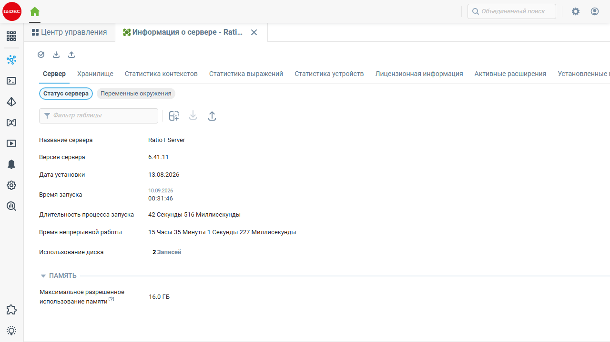
— 6.41.11-2532: рядом со строкой вкладок появилась кнопка «Ещё»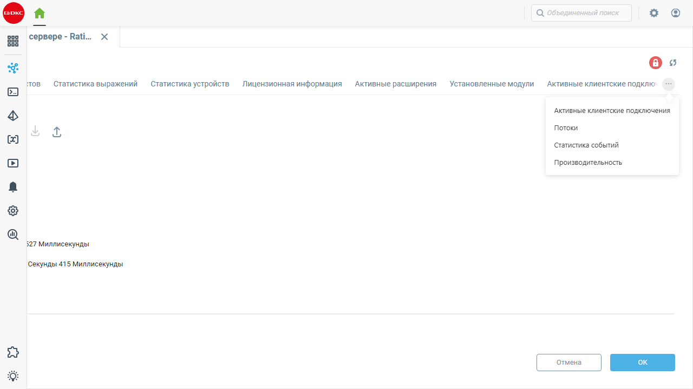
— скрытые вкладки доступны через меню «Ещё»
Итог
АГ сообщили, что ошибка исправлена и изменения будут доступны в будущих версиях платформы (ASD-6480). Проверено на 6.41.11-2532: исправлено — строка вкладок больше не обрезается бесследно, рядом появилась кнопка «Ещё» (…), не поместившиеся вкладки доступны через выпадающее меню; открытие скрытой вкладки «Производительность» через меню «Ещё» подтверждено (см. скриншоты).
Кейс 17. Раздел «Пользователи» открывает корень системного дерева вместо списка пользователей
Критичность: Medium
Тип: Web UI / навигация
Категория: 3. Ошибки платформы партнёра
Описание
В системном дереве веб-клиента раздел Пользователи при открытии загружает контейнер с тем же названием, но внутри отображает не учётные записи пользователей, а корневые ресурсы сервера: Устройства, Группы устройств, Пользователи, Приложения, Модели и т.д. То есть раздел не выполняет свою функцию.
Воспроизведение
- Войти в веб-клиент под
admin / admin. - В системном дереве слева открыть Пользователи.
- Посмотреть содержимое правой панели.
Ожидаемый результат
В правой панели отображается список пользователей сервера (admin, testuser02 и др.) с возможностью их редактирования.
Фактический результат
В правой панели отображается корень системного дерева, а не пользователи.
Скриншоты
 — вместо списка пользователей показаны системные ресурсы
— вместо списка пользователей показаны системные ресурсы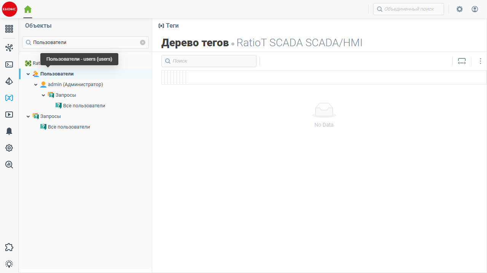
— 6.41.11-2532: контекст резолвится в учётные записи (admin), корень сервера не подставляется
Итог
АГ сообщили, что ошибка исправлена, изменения в будущих версиях платформы (ASD-6481). Проверено на 6.41.11-2532: исправлено — в системном дереве контекст «Пользователи» (users) раскрывается в учётные записи пользователей (admin (Администратор), путь users.admin (user)), корневые ресурсы сервера (Устройства, Группы устройств и т.д.) больше не подставляются. Проверка автотестом tests/case17_6481_check.py (пользовательский путь: поиск «Пользователи» в системном дереве → открытие контекста).
Кейс 18. Ссылки в демо-приложении ведут на сайт AggreGate вместо RatioT/BUFFLAB
Серьёзность: Medium
Тип: Брендинг / контент демо-проекта
Категория: 1. Ошибки кастомизации
Описание
В стартовой странице демо-приложения разделы «Документация» и «Онлайн» содержат ссылки, которые ведут на aggregate.digital, а не на актуальные ресурсы RatioT SCADA / BUFFLAB.
Воспроизведение
- Открыть демо-приложение SCADA/HMI в веб-клиенте.
- На стартовой странице выбрать ссылку в блоке «Документация» или «Онлайн».
- Браузер переходит на
aggregate.digital/docs/aggregate/ru_6.4/scada_hmi.htm.
Ожидаемый результат
Ссылки ведут на сайт RatioT SCADA / BUFFLAB (например, на внутреннюю документацию или маркетинговый сайт RatioT).
Фактический результат
Ссылки ведут на сайт AggreGate, в том числе на раздел с описанием «AggreGate SCADA/HMI».
Проверка в 6.41.11 (ASD-6496, ответ АГ: «исправлено в 6.41.11, сборка 2544»)
Пользовательский путь: логин → стартовая страница «Центр управления» → блоки «Документация» и «Онлайн». Пункты — кнопки дашборда; клик по каждой открывает URL в новой вкладке.
Результаты кликов:
| Пункт | Открывается |
|---|---|
| Документация по SCADA/HMI | https://buff-lab.ru/ratiot_scada/?source=sh (маркетинговая страница, не документация) |
| Документация по платформе | локальная документация …/web/static/templates/docs/introduction.htm (брендинг RatioT SCADA / BUFFLAB) |
| Веб-сайт продукта | https://buff-lab.ru/ratiot_scada/?source=sh |
| Веб-сайт платформы | https://buff-lab.ru/ratiot_scada/ |
| Блог продукта | https://buff-lab.ru/ratiot_scada/ |
| Сообщество | https://buff-lab.ru/ratiot_scada/ |
| Другие решения | https://buff-lab.ru/ratiot_scada/ |
| Купить | https://buff-lab.ru/ratiot_scada/ |
Ни одна ссылка не ведёт на aggregate.digital — основной дефект исправлен, сайт RatioT (buff-lab.ru) открывается. Остаточные замечания: «Документация по SCADA/HMI» ведёт на маркетинговую главную, а не на документацию; все шесть ссылок раздела «Онлайн» ведут на одну и ту же страницу (фактически заглушки — блога, сообщества и покупки там нет).
Скриншоты
 — блок Документация/Онлайн ведёт на AggreGate
— блок Документация/Онлайн ведёт на AggreGate — браузер на aggregate.digital
— браузер на aggregate.digital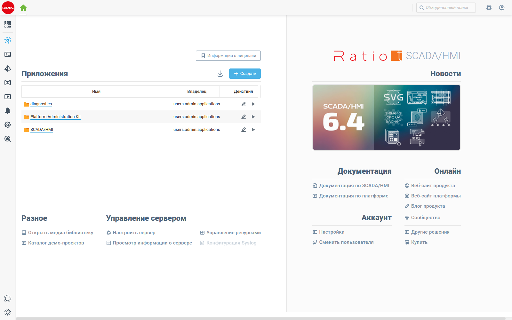
— блоки Документация/Онлайн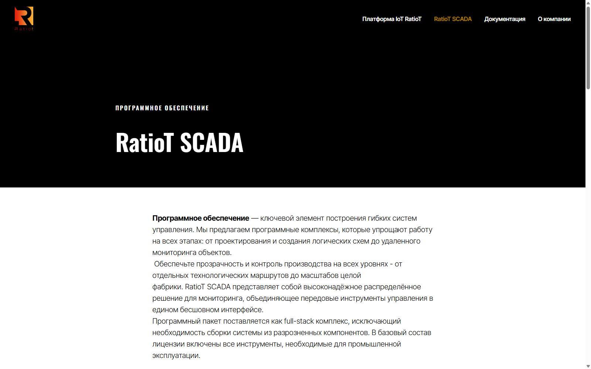
— ссылки ведут на сайт RatioT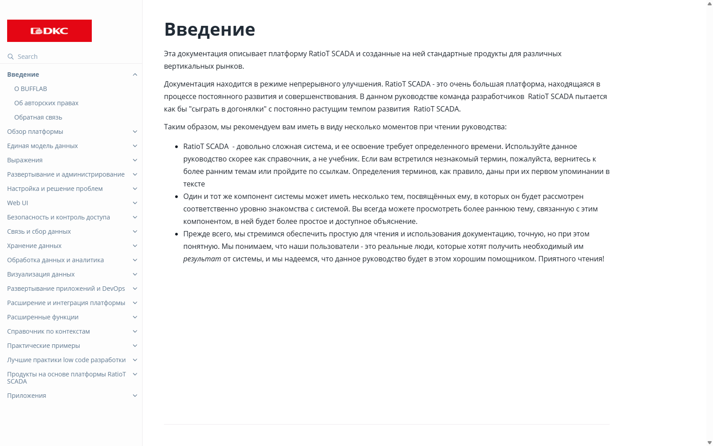
Кейс 19. Дашборд «Тревоги» не открывается в веб-клиенте
Серьёзность: High
Тип: Совместимость дашбордов
Категория: 3. Ошибки платформы партнёра
Описание
Дашборд «Тревоги» (возможно, созданный в десктопном клиенте) не открывается в веб-клиенте. Вместо содержимого выводится ошибка.
Воспроизведение
- В веб-клиенте открыть раздел «Тревоги» / дашборд тревог.
- Дождаться загрузки.
Ожидаемый результат
Дашборд отображается в веб-клиенте.
Фактический результат
- В версии 6.41.09: модальное окно ошибки «Дашборд был создан оконным клиентом и не поддерживается WEB клиентом».
- В версии 6.41.10: при открытии дашборда
users.admin.dashboards.alertsвместо HTML-страницы возвращается JSON-ошибка сервера:json {"status":"BAD_REQUEST","message":"Переменная 'additionalHttpHeaders' недоступна в контексте 'users.admin.dashboards.alerts'","code":"E"}При этом смежный дашбордusers.admin.dashboards.alertsMonitoring(«Активные тревоги») открывается корректно.
Проверка в 6.41.11 (ASD-6497, ответ АГ: «исправлено в 6.41.11, сборка 2544»)
АГ проверяли дашборд alertsMonitoring («Активные тревоги») — он действительно работает и у нас: открывается по иконке колокольчика в левой панели и по прямому URL, ошибок нет, вкладка «Исторические тревоги» тоже работает.
Однако исходный дефект — дашборд alerts («Тревоги») — не исправлен. Пользовательский путь: системное дерево → поиск «alerts» → «Тревоги» (Пользователи → admin → Модели → Управление тревогами → Инструментальные панели → Тревоги) → клик → модальная ошибка «Дашборд был создан оконным клиентом и не поддерживается WEB клиентом» (та же, что в 6.41.09). Прямой URL /web/dashboards/users.admin.dashboards.alerts по-прежнему возвращает JSON 400: «Переменная 'additionalHttpHeaders' недоступна в контексте 'users.admin.dashboards.alerts'».
Итог: не исправлено. АГ проверили соседний дашборд (alertsMonitoring), который и раньше работал.
Скриншоты


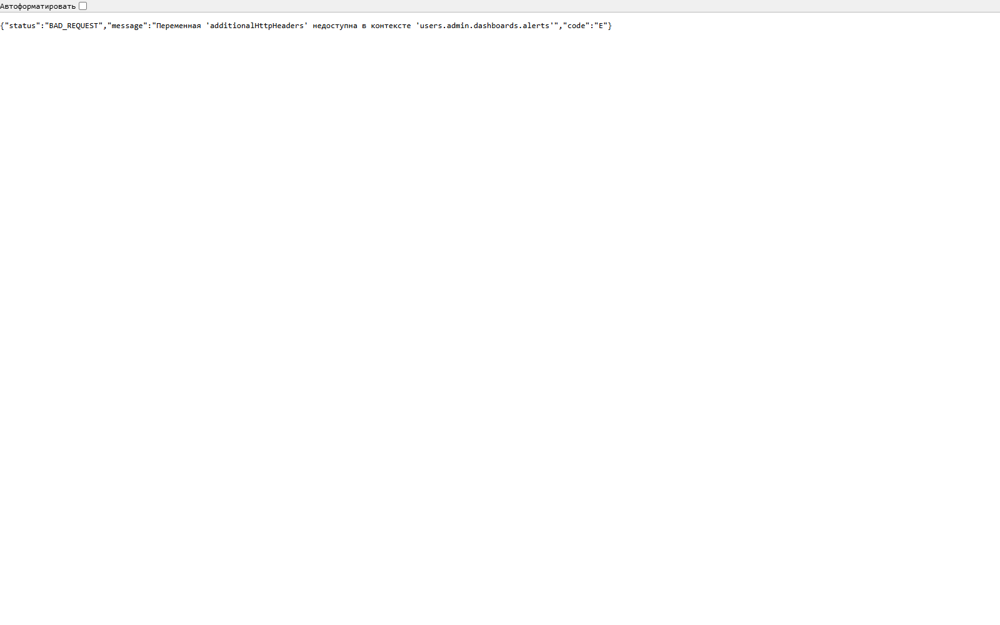
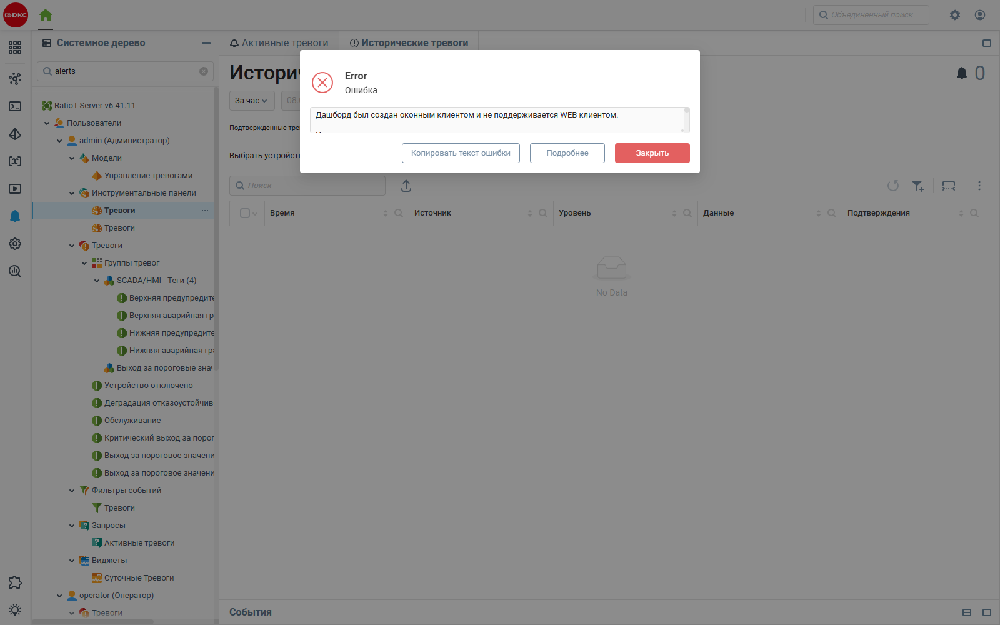
Кейс 20. Пустые шаблоны задвижек, насосов и других устройств
Серьёзность: Medium
Тип: Данные / шаблоны
Категория: 3. Ошибки платформы партнёра
Описание
При открытии шаблонов устройств (задвижек, насосов и др.) основная рабочая область остаётся пустой. Не понятно, это дефект данных или такое поведение ожидается.
Воспроизведение
- В системном дереве открыть «Инструментальные панели → Группы инструментальных панелей → Шаблон задвижка».
- Выбрать конкретный шаблон, например «Шаблон Задвижка V2 (Dockable)».
Ожидаемый результат
Отображается содержимое шаблона (поля, параметры, визуальный редактор).
Фактический результат
Правая панель пустая.
Скриншоты

Кейс 21. Бесконечная загрузка и JS-ошибка при редактировании демо-проектов
Серьёзность: High
Тип: Web UI / dashboard SDK
Категория: 3. Ошибки платформы партнёра
Описание
При попытке редактирования демо-проектов элементы дашборда показывают бесконечные спиннеры. В консоли/модальном окне появляется JS-ошибка инициализации дашборда.
Воспроизведение
- Открыть демо-проект в режиме редактирования (например,
users.admin.dashboards.milkStorage). - Дождаться загрузки.
Ожидаемый результат
Дашборд загружается и доступен для редактирования.
Фактический результат
Бесконечные индикаторы загрузки. Ошибка:
Error init dashboard "users.admin.dashboards.ioField".
Cannot read properties of null (reading 'getContextManager')
TypeError: Cannot read properties of null (reading 'getContextManager')
at Ft.initComponentsInternal (...)
at Ft.initComponents (...)
at Ft.initServer (...)
at async Uo.loadDashboard (...)
at async r.prepareSubDashboardModel (...)
at async Promise.allSettled (index 0)
Проверка в 6.41.11 (ASD-6499, ответ АГ: «исправлено в 6.41.11, сборка 2544»)
Пользовательский путь: Центр управления → «Каталог демо-проектов» → «Хранилище пастеризованного молока» → кнопка «Изменить» (URL открывается как ...milkStorage?mode=EDIT; старый суффикс /edit теперь возвращает страницу 404 — роутинг изменился).
Результат: дашборд загружается целиком, бесконечных спиннеров нет, редактор доступен для редактирования. Исходная ошибка Cannot read properties of null (reading 'getContextManager') не воспроизводится. Основной дефект исправлен.
Остаточные замечания (не блокируют работу): в консоли ~95 JS-ошибок при открытии редактора — серия Error: Event 'shown' not found in context 'implant01N1' (и десятки аналогичных для контекстов implant*), а также Cannot set components (classFieldList0) parent.
Скриншоты


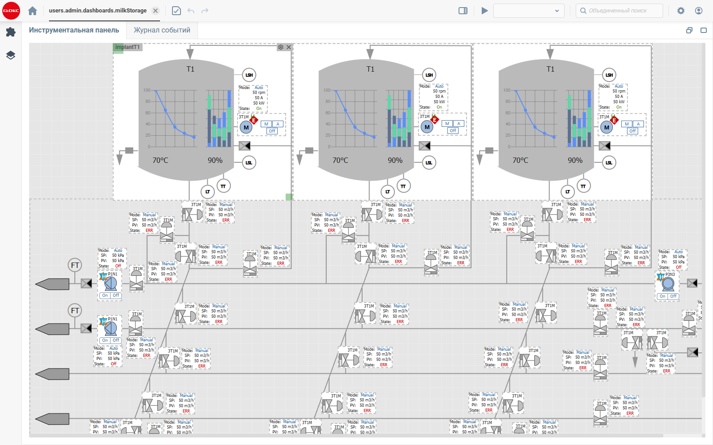
Кейс 22. Скриншоты и изображения AggreGate в справке и демо-проектах
Серьёзность: Low
Тип: Брендинг / UI
Категория: 1. Ошибки кастомизации
Описание
Во встроенной справке и демо-проектах встречаются скриншоты/изображения с брендингом AggreGate (логотип, цветовая схема, название).
Воспроизведение
- Открыть встроенную справку или демо «Дом».
- Обратить внимание на картинки/приветственные экраны.
Ожидаемый результат
Все иллюстрации содержат брендинг RatioT SCADA / BUFFLAB.
Фактический результат
Видны логотип и тексты AggreGate.
Проверка в 6.41.11 (ASD-6500, ответ АГ: «дашборд "Дом" отсутствует в составе решения, проблем нет»)
Проверены все 5 демо-решений (Линия бутилирования, Фильтровальная станция, Хранилище пастеризованного молока, Магистральный газопровод, Интеллектуальная энергосистема) и все 5 разделов «Обзор UI компонентов» — демо-проекты чистые, брендинга AggreGate нет. Дашборд «Дом» действительно отсутствует.
Однако полное сканирование встроенной документации (4500+ файлов, все страницы с изображениями > 120 КБ просмотрены визуально) выявило оставшиеся места с брендингом AggreGate:
| Страница документации | Что найдено |
|---|---|
SCADA/HMI → Теги (sh_scada_tags.htm) |
скриншот: в шапке «Бизнес-объекты и иерархия цифровых двойников ● AggreGate SCADA/HMI» |
SCADA/HMI → Библиотека символов (sh_symbol_library.htm) |
2 скриншота: «Медиа активы сервера ● AggreGate SCADA/HMI» |
SCADA/HMI → Мастер создания приложений (sh_application_generation_wizard.htm) |
2 скриншота: ссылка «Уже работали с AggreGate? Начните с чистого листа» |
Клиент → Редактор выражений (cl_expression_builder.htm) |
скриншот: в дереве Server Data «AggreGate Server v.5.30.08» |
Интеграция с KAFKA (tut_kafka_integration.htm) |
4 внешние ссылки на aggregate.digital/docs/... |
Драйвер Modbus (ls_drivers_modbus.htm) |
2 внешние ссылки на tibbo.com (контроллер DS1206, описание Modbus) |
Серверы устройств → Устранение проблем (ds_led_patterns.htm) |
внешняя ссылка на tibbo.com/extras/leds.html |
Дополнительно (артефакт ребрендинга, не AggreGate): в заголовке дашборда «Каталог демо-проектов» отображается «RatioT SCADA SCADA/HMI» — задвоение «SCADA» осталось после замены «AggreGate SCADA/HMI».
Путь воспроизведения (пользовательский): Центр управления → кнопка «Документация по платформе» → открыть перечисленные разделы в дереве документации.
Итог: кейс закрыт не полностью — демо-проекты чистые, но в документации остались 6 скриншотов с брендингом AggreGate и 7 внешних ссылок на aggregate.digital / tibbo.com.
Скриншоты


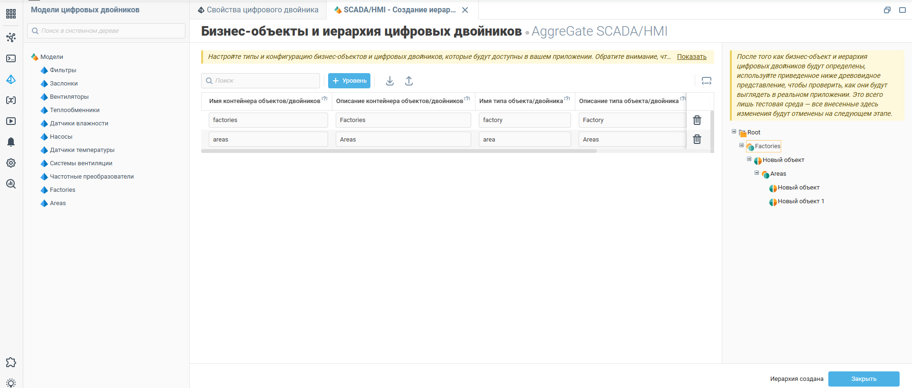
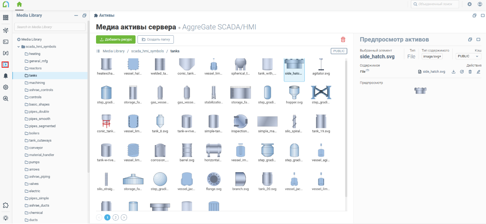
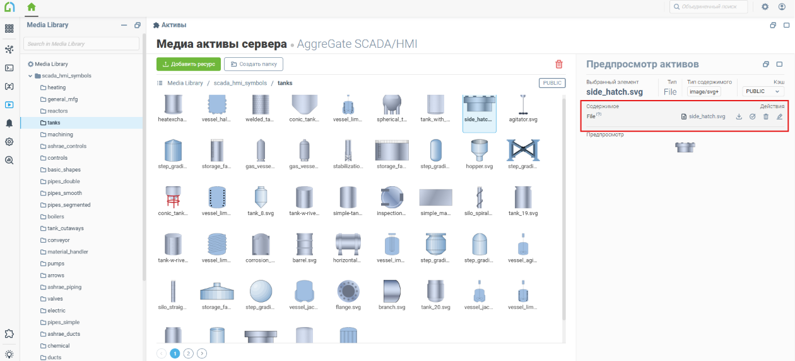
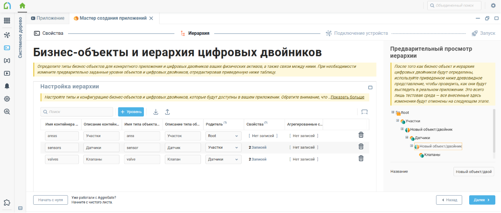
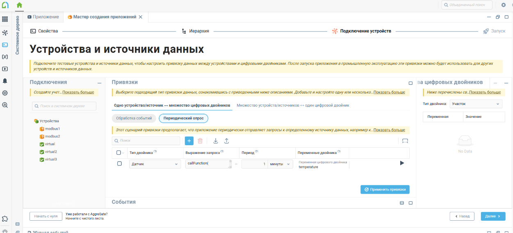
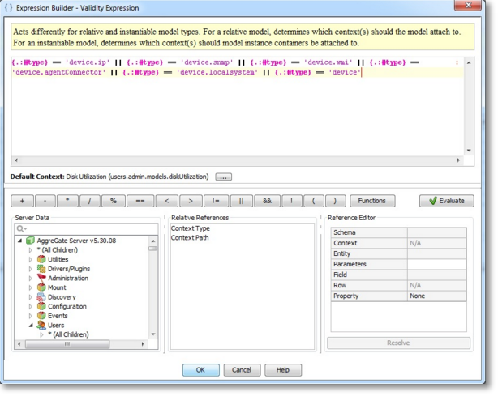
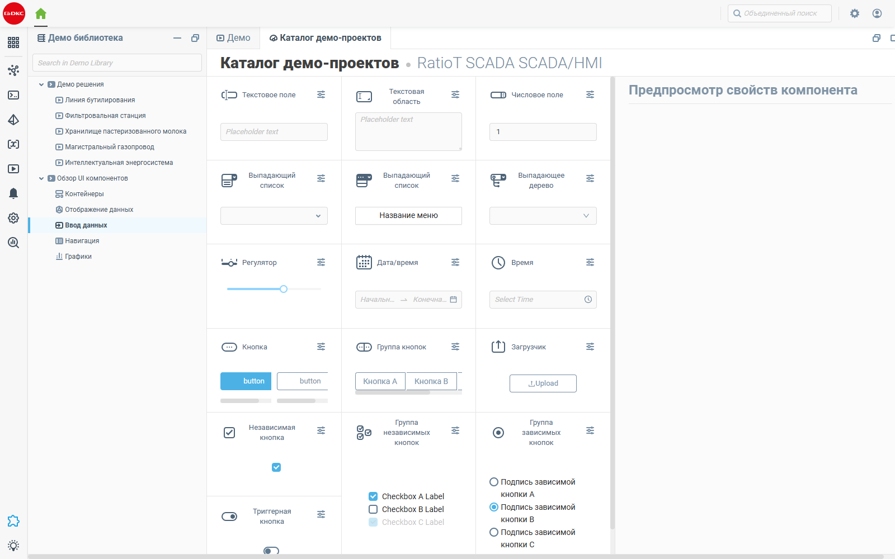
Кейс 23. Не отображаются изображения в демо-проекте Романа Шиндина
Серьёзность: Medium
Тип: UI / ресурсы
Категория: 3. Ошибки платформы партнёра
Описание
В присланном демо-проекте Романа Шиндина вместо изображений/иконок отображаются битые плейсхолдеры.
Воспроизведение
- Открыть указанный демо-проект.
- Просмотреть элементы, где должны быть картинки.
Ожидаемый результат
Изображения загружаются корректно.
Фактический результат
Видны пустые плейсхолдеры вместо изображений.
Скриншоты

Итог
Переписка по ASD-6501: АГ сообщили, что данный проект не входит в состав дистрибутива и был направлен в качестве примера. Наша позиция: раз проект передан вместе с продуктом, его отображение с битыми изображениями — баг само по себе; передаётся полностью готовый продукт. АГ уточнили, что в переданной сборке проекта не нашли, и запросили имя дашборда со скриншота → «АСДУ (SCADA/HMI) v2» (видно в заголовке вкладки на скриншоте). Локально подтверждено: проекта «АСДУ» нет ни в каталоге демо-проектов, ни в объединённом поиске на 6.41.11-2532. Ожидаем реакции АГ.
Кейс 24. Не работает активация метаданных устройства
Серьёзность: Medium
Тип: Устройства / метаданные
Категория: 3. Ошибки платформы партнёра
Описание
Несмотря на то что в свойствах устройства «Активные переменные/функции/события» установлено значение «Все», вкладка «Метаданные» остаётся пустой.
Воспроизведение
- Открыть свойства устройства.
- На вкладке «Общие свойства» установить «Активные переменные/функции/события» = «Все».
- Перейти на вкладку «Метаданные».
Ожидаемый результат
Отображается список метаданных устройства.
Фактический результат
Вкладка пустая (No Data), хотя условие для отображения выполнено.
Проверка в 6.41.11 (ASD-6502, ответ АГ: «некорректная подсказка к полю, значение должно быть "Только выбранные", исправлено в новых сборках»)
Проверено на локальной установке 6.41.11 (сборка 2544), пользовательский путь, без обходных манипуляций:
- Системное дерево → правый клик по «Устройства» → «Добавить устройство» → драйвер «Локальная Система» → OK. Устройство
local_systemсоздано, статус «Есть подключение, Синхронизировано». - Правый клик по устройству → «Редактировать свойства аккаунта устройства» → раздел «Метаданные» на вкладке «Общие свойства».
- Поле «Активные переменные/функции/события» по умолчанию имеет значение «Все»; в выпадающем списке два значения: «Все» и «Только выбранные».
- Установили «Только выбранные» → OK (сохраняется без ошибок).
- Повторно открыли свойства → вкладка «Метаданные» — теперь активна: табы «Переменные / Функции / События», в таблице переменных отображаются
cpu(Процессор),memory(Память),disk(Диски) с флагами «Активный». Подсказка на вкладке прямо указывает: «Этот список доступен только в том случае, если для общего свойства устройства "Активные переменные/функции/события" установлено значение "Только выбранные"».
Подтверждаем позицию АГ: при значении «Все» список метаданных на вкладке недоступен по замыслу (все переменные активны без явного выбора), редактируемый список появляется только при «Только выбранные». Функционал активации метаданных работает, исходная жалоба воспроизводилась из-за некорректной подсказки у поля. Текст всплывающей подсказки [?] при автоматизированной проверке не зафиксировался (не появляется при программном наведении), текст на самой вкладке «Метаданные» сформулирован корректно.
Итог: исправлено / поведение подтверждено. Рекомендуется уточнить подсказку [?] у поля в соответствии с ответом АГ.
Скриншоты


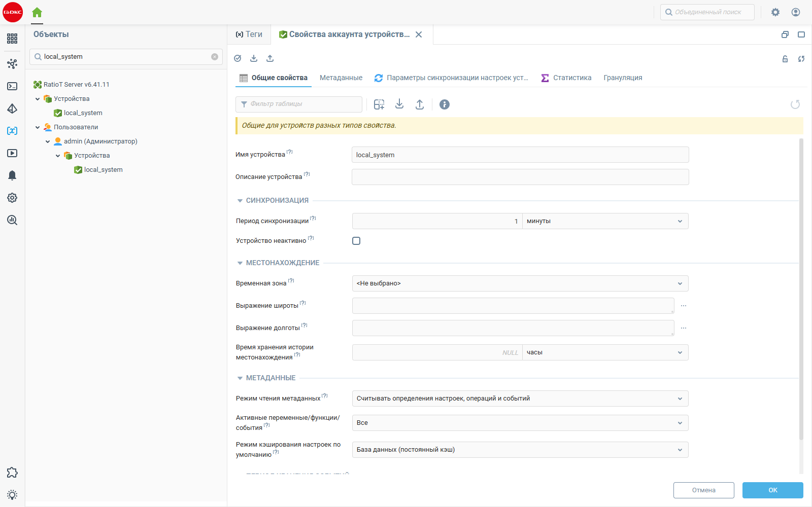
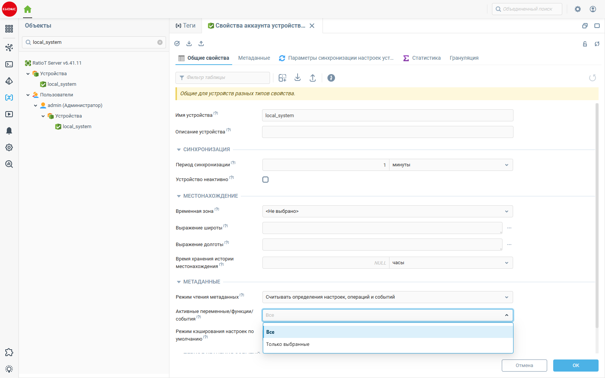
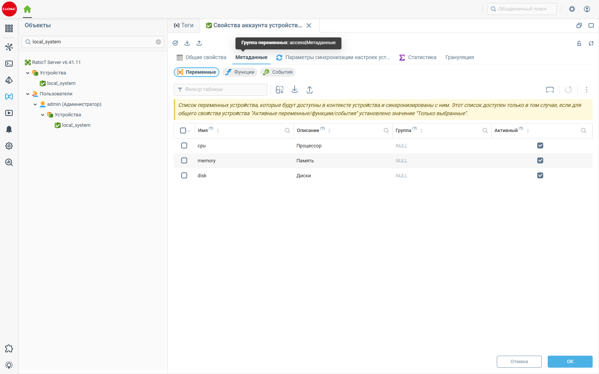
Кейс 25. Встроенная справка недоступна по URL /static/docs/
Серьёзность: Medium
Тип: Документация / Web UI
Категория: 2. Ошибки OEM
Описание
Ссылки на встроенную справку из веб-клиента и прямые URL /static/docs/* возвращают страницу 404 вместо HTML-справки. Документация присутствует в файловой системе сервера (admin/custom/templates/docs/), но не отдаётся через веб-сервер.
Воспроизведение
- Открыть в веб-клиенте любую страницу, например
https://localhost:8443/web/. - Перейти по прямому URL встроенной справки:
https://localhost:8443/static/docs/index.htmилиhttps://localhost:8443/static/docs/introduction.htm. - Убедиться, что вместо справки отображается страница 404.
Ожидаемый результат
По URL /static/docs/ открывается встроенная HTML-справка RatioT SCADA.
Фактический результат
Любой из проверенных URL (/static/docs/index.htm, /static/docs/introduction.htm, /web/static/docs/index.htm, /admin/custom/templates/docs/index.htm и др.) возвращает 404.
Скриншоты

Кейс 26. JS-ошибки getListenerCode при навигации по системному дереву
Серьёзность: Medium
Тип: Web UI / JavaScript
Категория: 3. Ошибки платформы партнёра
Описание
При открытии любого раздела через системное дерево или поиск в дереве в консоли браузера фиксируются массовые JS-ошибки Cannot read properties of null (reading 'getListenerCode'). Разделы визуально открываются, но ошибки указывают на некорректную инициализацию слушателей событий в frontend и могут приводить к нестабильности интерфейса.
Воспроизведение
- Войти в веб-клиент
https://localhost:8443/webподadmin / admin. - Открыть консоль разработчика браузера (F12).
- В поле Поиск в системном дереве ввести Устройства.
- Кликнуть по найденному разделу Устройства в дереве.
- Посмотреть в консоль.
Ожидаемый результат
Открытие раздела происходит без JavaScript-ошибок.
Фактический результат
В консоли появляются множественные ошибки вида:
Error: Ошибка инициализации приема события 'visibleChildAdded' из контекста 'users.admin.dashboards.devices':
Cannot read properties of null (reading 'getListenerCode')
Скриншоты
 — состояние после открытия раздела, при этом в консоли зафиксированы ошибки
— состояние после открытия раздела, при этом в консоли зафиксированы ошибки getListenerCode
Кейс 27. Прямые ссылки на настройки сервера и лицензии возвращают JSON 404
Серьёзность: Medium
Тип: Web UI / обработка ошибок
Категория: 3. Ошибки платформы партнёра
Описание
Прямые URL, которые могут использоваться в закладках, документации или внутренних ссылках, возвращают сырой JSON-ответ об ошибке 404 вместо HTML-страницы 404. При этом пользовательский путь через кнопку Настроить сервер и вкладку Лицензионная информация внутри Информации о сервере работает корректно.
Воспроизведение
- Войти в веб-клиент или открыть новую вкладку браузера.
- Перейти по URL
https://localhost:8443/web/context/users.admin.server.properties. - Перейти по URL
https://localhost:8443/web/context/users.admin.licenseInfo. - Убедиться, что в обоих случаях отображается JSON-ответ
{"type":"about:blank","title":"Not Found","status":404,...}вместо HTML-страницы.
Ожидаемый результат
По прямым ссылкам на внутренние разделы открывается либо сам раздел, либо единая HTML-страница 404 с понятным сообщением.
Фактический результат
Отображается сырой JSON 404.
Проверка в 6.41.11 (ASD-6505, ответ АГ: «не является ошибкой, единая модель данных; используйте редирект-дашборды или REST API с Bearer-токеном»)
Проверено на локальной установке 6.41.11 (сборка 2544):
- Прямые URL. Анонимно оба адреса теперь возвращают JSON 401
{"error":"AUTHENTICATION_REQUIRED"}(в 6.41.10 был сразу JSON 404). После входа в веб-клиент тот же URL возвращает JSON 404:No endpoint GET /web/context/users.admin.licenseInfo.— эндпоинтов «страница по пути контекста» действительно нет, сырой JSON вместо HTML-страницы 404 по-прежнему отображается. - Пользовательский путь через UI работает. Системное дерево → правый клик по корневому узлу «RatioT Server v6.41.11» → «Показать информацию о сервере» → вкладка «Лицензионная информация» открывается корректно (Trial License, испытательный период 30 дней, макс. 100 устройств). Пункт «Настроить сервер» доступен в том же контекстном меню.
- REST API (предложение АГ) функционирует.
POST /rest/authс логином/паролем возвращает токен;GET /rest/v1/contexts/users.adminс заголовкомAuthorization: Bearer <токен>возвращает 200 и данные контекста. Это интеграционный API: для «прямой ссылки в закладках браузера» неприменим, так как обычный переход по ссылке не передаёт кастомный заголовок Authorization.
Итог: принимаем позицию АГ по сути обращения — прямой доступ к настройкам «к к файлу» по URL является by design. Ответ на вопрос АГ «на основании чего предположили, что должно работать иначе»: ожидание касалось не доступа к переменным, а единообразия обработки ошибок в веб-клиенте — пользователь по любой «битой» ссылке внутри /web/* видит сырой JSON, тогда как другие разделы сервера отдают HTML-страницу 404. Это непоследовательное поведение зафиксировано отдельно в кейсе 14 и остаётся актуальным; настоящий кейс можно закрывать.
Скриншоты


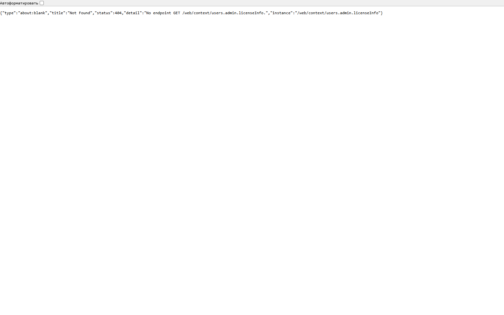
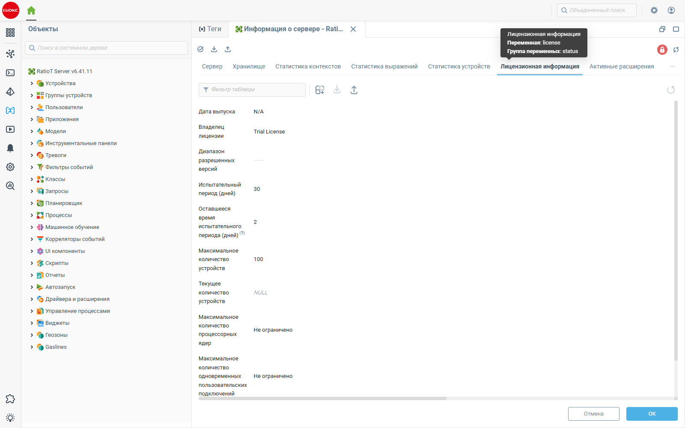
Кейс 28. Не работает перенос контекстов посредством приложений
Серьёзность: High
Тип: Приложения / перенос контекстов
Категория: 3. Ошибки платформы партнёра
Источник: коллеги (ilya.tarynin@dkc.ru), тикет ASD-6521
Описание
Перенос разработок между серверами через приложения (упаковка приложения в ZIP-архив и его развёртывание на другом сервере) не работает: окно «Результат обновления» не содержит данных, ресурсы не разворачиваются.
Воспроизведение (по описанию коллег)
- Создать приложение с набором контекстов на одном сервере (полигон).
- Добавить ресурсы в приложение, сохранить изменения.
- Выгрузить приложение как ZIP-архив (создание приложения, добавление ресурсов и выгрузка работают стабильно).
- На другом сервере (эталон) выполнить развёртывание приложения из выгруженного архива.
Ожидаемый результат
Работающий функционал переноса наработок между серверами: окно «Результат обновления» содержит строки по каждому контексту, ресурсы разворачиваются.
Фактический результат
Окно «Результат обновления» пустое (No Data). Невозможно перенести разработки между серверами.
Ответ АГ (ASD-6521)
«Провели тестирование на версии 6.41.11-2553 — проблема отсутствует». Алгоритм проверки АГ (воспроизводим на одном сервере): создать приложение «test» → добавить ресурс и сохранить изменения → упаковать и выгрузить приложение как ZIP-архив → удалить все ресурсы из приложения и сохранить → выполнить обновление ранее выгруженным архивом (окно «Результат обновления» заполнено: «Контекст обновлён», «Контекст пропущен») → ресурс добавлен обратно («Мастер настроек тревог»).
Итог: по ответу АГ исправлено в 6.41.11-2553. Самостоятельная проверка нашей командой не проводилась — сценарий переноса требует двух контуров (полигон → эталон); при наличии двух серверов рекомендуется контрольная проверка по алгоритму АГ.
Скриншоты
- Скриншоты приложены в тикете ASD-6521 (пустое окно «Результат обновления» со стороны коллег, скриншоты проверки АГ). Файлы
tests/screenshots/case28_*.png— вносятся.
Кейс 29. Не работают дополнительные свойства при использовании относительных инструментальных панелей
Серьёзность: Low
Тип: Инструментальные панели / дополнительные свойства
Категория: 3. Ошибки платформы партнёра
Источник: коллеги (ilya.tarynin@dkc.ru), тикет ASD-6523
Описание
При использовании относительных инструментальных панелей не работает функционал дополнительных свойств: на мнемосхеме панель дополнительных свойств («Общие данные») отображается, но все её поля пустые (Статус ПВ, Сезон, Наличие аварий, Режим управления, Уставка темп. ПВ, Полоса регулирования, Температура ПВ, Уставка наружного возд., Задание на ПЧ вент.).
Воспроизведение (по описанию коллег)
- Открыть инструментальную панель, использующую относительные инструментальные панели (мнемосхема контролируемого агрегата, вкладки «Графические данные / Свойства / Аварийные сигналы / Тренды»).
- Открыть панель дополнительных свойств («Общие данные»).
- Убедиться, что значения дополнительных свойств не подгружаются (все поля пустые).
Ожидаемый результат
Дополнительные свойства отображают актуальные значения.
Фактический результат
Все поля дополнительных свойств пустые.
Ответ АГ (ASD-6523)
«Проверили на версии 6.41.11-2553 — ошибка отсутствует. Ранее похожий инцидент с дополнительным свойством уже был исправлен нашей командой разработки (задача №20649)».
Итог: по ответу АГ исправлено в 6.41.11-2553 (задача разработки №20649). Самостоятельная проверка нашей командой не проводилась — требуется контур с мнемосхемой, использующей относительные инструментальные панели.
Скриншоты
- Скриншоты приложены в тикете ASD-6523 (мнемосхема с пустой панелью «Общие данные»). Файлы
tests/screenshots/case29_*.png— вносятся.
Кейс 30. Не работает eventLog при использовании относительных инструментальных панелей
Серьёзность: Low
Тип: Инструментальные панели / eventLog
Категория: 3. Ошибки платформы партнёра
Источник: коллеги (ilya.tarynin@dkc.ru), тикет ASD-6522
Описание
Для элемента eventLog нет возможности указать маску контекстов отображаемых событий посредством контекстной ссылки, возвращаемой контекстом по умолчанию ({.:} или dc()). Такой подход нужен при реализации имплантов, когда относительная инструментальная модель, используемая для реализации импланта, содержит элемент «Лог Тревог», в котором должны быть отражены события контекста, к которому привязан имплант.
Воспроизведение (по описанию коллег)
- Реализовать имплант на основе относительной инструментальной модели, содержащей элемент eventLog («Лог Тревог»).
- В настройках элемента eventLog указать маску контекстов отображаемых событий контекстной ссылкой
{.:}(илиdc()), чтобы лог показывал события контекста, к которому привязан имплант. - Сохранить и открыть панель импланта.
Ожидаемый результат
События контекста, указанного для импланта, отображаются в логе.
Фактический результат
События не отображаются.
Ответ АГ (ASD-6522)
«Чтобы мы могли оперативно и точно разобраться в ситуации, нам очень не хватает деталей. Не могли бы вы дополнить запрос: приложите, пожалуйста, все контексты по задаче и распишите пошаговый сценарий воспроизведения».
Итог: ожидает ответа коллег — АГ запросили контексты и пошаговый сценарий воспроизведения.
Скриншоты
- Скриншоты приложены в тикете ASD-6522. Файлы
tests/screenshots/case30_*.png— вносятся.
Итог
| Кейс | Серьёзность | Категория | Статус |
|---|---|---|---|
| 1. Ошибки старта | Medium | OEM | Частично исправлено в 6.41.11 (2532): 3 исходных ERROR устранены, осталась deviceImages (ASD-6474) |
| 2. Режимы free/trial не описаны в документации | Medium | Кастомизация | Подтверждён / реакции АГ нет |
| 3. Инсталлятор запрашивает перезапись собственных файлов | Low | OEM | Подтверждён / в т.ч. в 6.41.11 / реакции АГ нет |
| 4. Импорт/экспорт Modbus CSV/XML теряет поля и кодировку | High | Платформа | Подтверждён коллегами / в trial нет драйвера Modbus / реакции АГ нет |
| 5. eventLog сбрасывает настройки колонок при событиях | High | Платформа | Подтверждён коллегами / в trial нет редактора дашбордов |
| 6. Дерево тегов: нет абсолютной модели как источника | Medium | Платформа | Закрыто / не баг (by design, подтверждено документацией 6.41.11) |
| 7. NoSQL-хранилище событий ломает сервер | Critical | Платформа | Подтверждён коллегами / настройка доступна, переключение не проводилось |
| 8. HTML-сниппет сдвигает layout дашборда | Medium | Платформа | Закрыто / не воспроизводится у АГ (6.41.10-2512), перепроверка невозможна, незначительный |
| 9. Установка/лицензирование: новый activation key после переустановки | High | OEM | Подтверждён коллегами / требует переустановки / реакции АГ нет |
| 10. Локальный магазин приложений отсутствует в веб-клиенте | High | OEM | Подтверждён / реакции АГ нет |
| 11. Вёрстка страницы 404 | Low | Кастомизация | Подтверждён / реакции АГ нет |
| 12. Логотип и брендинг AggreGate в дистрибутиве | Medium | Кастомизация | Подтверждён / реакции АГ нет |
| 13. Драйвера/расширения открывают корень системного дерева | Medium | Платформа | Подтверждён / реакции АГ нет |
14. /web/* 404 возвращает JSON |
Low | Платформа | Подтверждён / реакции АГ нет |
| 15. Встроенная документация не открывается из SPA | Medium | Кастомизация | Подтверждён / реакции АГ нет |
| 16. Вкладки Информации о сервере обрезаются | Low | Платформа | Исправлено в 6.41.11-2532 (ASD-6480), проверено: скрытые вкладки доступны через меню «Ещё» |
| 17. Пользователи открывают корень системного дерева | Medium | Платформа | Исправлено в 6.41.11-2532 (ASD-6481), проверено: контекст резолвится в учётные записи (users.admin) |
| 18. Ссылки в демо ведут на AggreGate | Medium | Кастомизация | Исправлено в 6.41.11 (все «Онлайн»-ссылки ведут на одну страницу buff-lab.ru) |
| 19. Дашборд Тревог не открывается в WEB | High | Платформа | Не исправлено в 6.41.11 (АГ проверили соседний alertsMonitoring) |
| 20. Пустые шаблоны устройств | Medium | Платформа | Подтверждён / требует уточнения / реакции АГ нет |
| 21. Бесконечная загрузка и JS-ошибка демо | High | Платформа | Исправлено в 6.41.11 (остаточные ошибки «Event 'shown' not found» в консоли) |
| 22. Скриншоты AggreGate в справке/демо | Low | Кастомизация | Частично исправлено в 6.41.11: демо чистые, в документации остались 6 скриншотов и 7 ссылок на aggregate.digital / tibbo.com |
| 23. Не отображаются изображения в демо Шиндина | Medium | Платформа | Требует уточнения / АГ: проект вне дистрибутива; передано имя дашборда «АСДУ (SCADA/HMI) v2» |
| 24. Активация метаданных устройства не работает | Medium | Платформа | Исправлено в 6.41.11 / поведение подтверждено (ASD-6502) |
25. Встроенная справка недоступна по /static/docs/ |
Medium | OEM | Подтверждён в 6.41.10 / реакции АГ нет |
26. JS-ошибки getListenerCode при навигации по дереву |
Medium | Платформа | Подтверждён в 6.41.10 / реакции АГ нет |
| 27. Прямые ссылки на настройки сервера и лицензии возвращают JSON 404 | Medium | Платформа | Закрыто / by design (ASD-6505); непоследовательность JSON/HTML 404 — см. кейс 14 |
| 28. Не работает перенос контекстов посредством приложений | High | Платформа | Исправлено в 6.41.11-2553 (по ответу АГ, ASD-6521) / самостоятельно не проверялось |
| 29. Не работают дополнительные свойства при относительных инструментальных панелях | Low | Платформа | Исправлено в 6.41.11-2553 (по ответу АГ, ASD-6523, задача №20649) / самостоятельно не проверялось |
| 30. Не работает eventLog при относительных инструментальных панелях | Low | Платформа | Ожидает ответа коллег (АГ запросили контексты и сценарий, ASD-6522) |